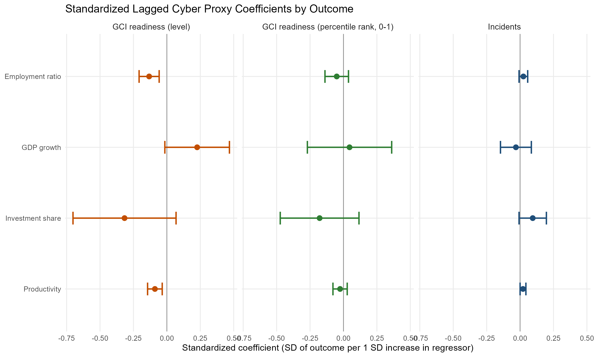

01
Public · Reproducible analytics
Cyber Macro Impact Pilot
A country-year analytical prototype testing how cyber readiness and incident intensity relate to productivity, employment, investment and GDP growth. Built as a traceable R/Quarto pipeline with harmonisation logs, fixed-effects models, robustness tests and an executive narrative.
